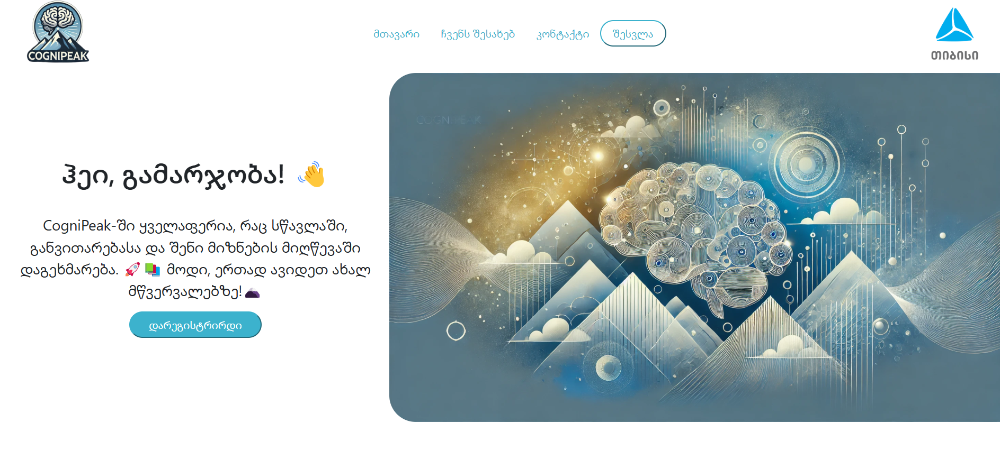
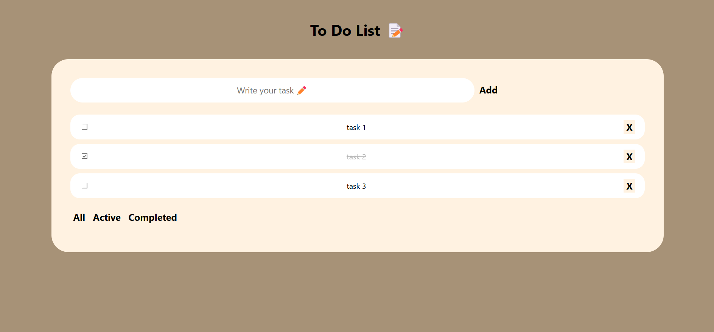
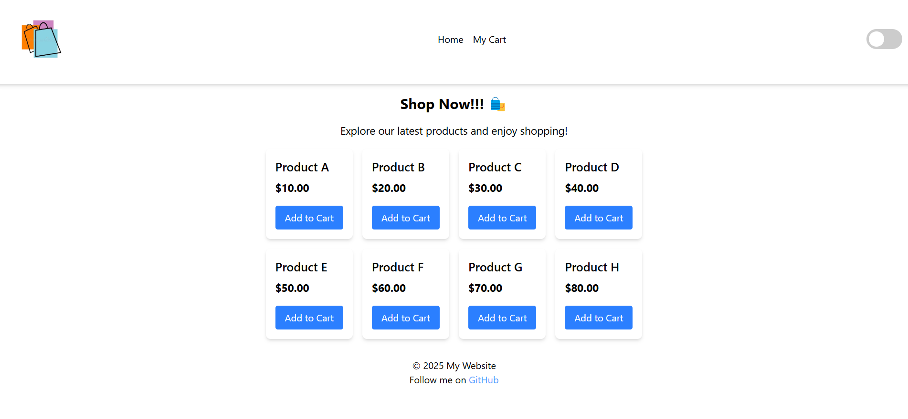
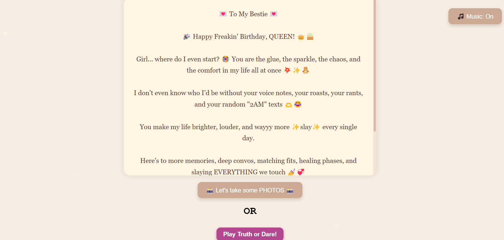

My Projects
Here are some of the projects I’ve worked on. Each project showcases my skills, the technologies I used, and a live demonstration where available.




BirthDay Gift 🌸
A birthday gift web page designed to celebrate a special occasion. The page includes a personalized message, images, and a festive design. It’s a simple yet heartfelt way to express birthday wishes. also you can take pics/videos or play truth or dare game.
HTML
CSS
JavaScript